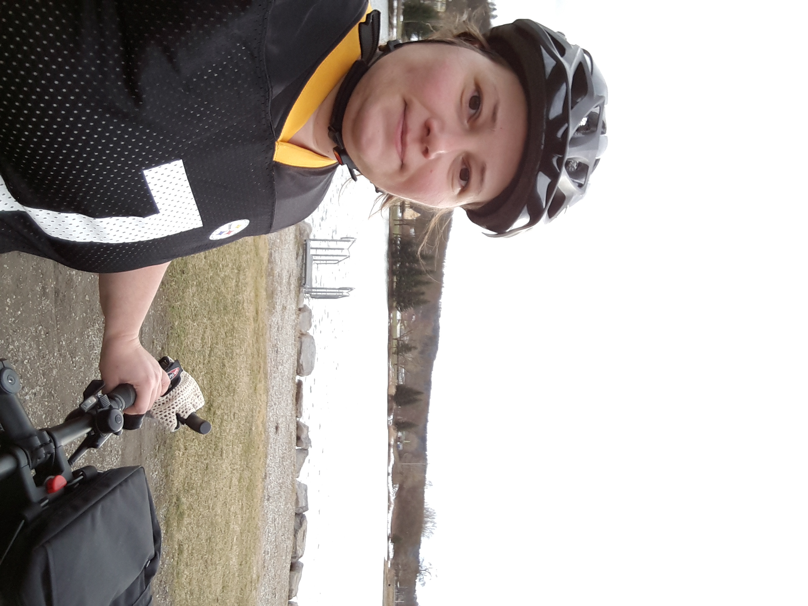

Entdecken Sie die Őrség, und bauen Sie Ihre eigene Fahrradtour auf!

Willkommen in der Orseg, Ungarn! In dieser Region warten nicht nur ruhige Radwege mit vielen Wälder und milden Hügel, aber auch viele Sehenswürdigkeiten auf Sie. Das Ziel dieser Seite ist, Sie bei der Entdeckung der Region und bei der Planung Ihrer Fahrradtour zu helfen.
Die Sehenswürdigkeiten können Sie sowohl auf der Routenplaner Karte, als auch in der Bildgalerie anschauen. Möchten Sie auch die mögliche Routen anschauen? Markieren Sie zwei Punkte auf der Karte und schauen Sie die Länge, Anstieg, Spur und den Höhenmeterquerschnitt der angebotenen Routen an. Ob Sie Asphaltwege oder Forstwege bevorzugen, oder nicht unbedingt den kürzesten Weg nehmen wollen, können Sie die Einstellungen der Wegsuche nach Ihrem Bedarf modifizieren.
Haben Sie schon eine Idee, wohin und wie lang Ihre Tour geht, können Sie in der Routenplaner den Routeaufbau aktivieren, und Strecke zu Strecke auch einen längeren Route aufbauen. Die Spur und den Höhenmeterquerschnitt können Sie auch für die gesamte Route sehen. Wenn Sie ein Navogationsgerät oder ein Smartphone haben, können Sie die aufgebaute Route in ".kml" Format herunterladen und in GoogleMaps oder in anderen Navigationssoftware importieren. Dadurch können Sie die aufgebaute Route auch zum Ort mitnehmen und beim real-time Navigation benutzen.
Haben Sie eine Bemerkung, Vorschlag, oder wüschen Sie die Zugabe einer bestimmten Strecke? Bitte halten Sie Ihre Meinung nicht zurück! Durch den Kontaktformular können Sie es für mich schreiben. So bald wie möglich bekommen Sie eine Antwort.

Ich wüsche Ihnen eine schöne und Abenteuerreiche Reise!
Rita Papp - Webmaster
Neue Strecken, die die Region Salovci, Bajansenye und Oriszentpeter abdecken, werden noch diese Woche zum Routennetzwerk zugegeben. Interesse? Dann schauen Sie am Ende dieser Woche nochmals vorbei!
Von neuen Besitzerinnen hat die Hotel Apat in Apatistvanfalva, im Herzen der Region, neu geöffnet. Bequeme Zimmern und Fahrradverleih warten auf die Besucherinnen. Im Restaurant können sowohl die Hotelgäste als auch andere hungrigen Radfahrerinnen köstliche, auf heimischen Zutaten gemachte Speisen und Getränke genießen.